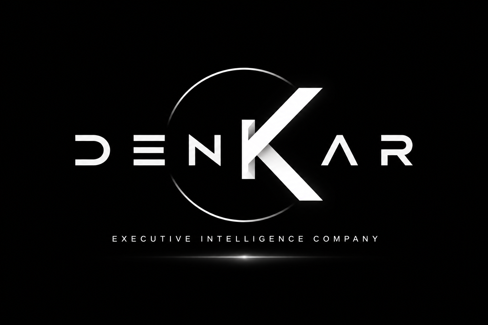

◎
Antes de la reunión
Contexto de la cuenta, personas clave, noticias, oportunidades, riesgos y preguntas recomendadas.

EXECUTIVE INTELLIGENCE COMPANY
DENKAR conecta CRM, correo, calendario, reuniones y datos comerciales para convertir información dispersa en prioridades, acciones y mejores decisiones.
Diseñado para empresas B2B, minería, servicios e industrias complejas.
DENKAR COMMERCIAL
DENKAR trabaja sobre tus sistemas actuales para coordinar mejor la ejecución comercial.
Contexto de la cuenta, personas clave, noticias, oportunidades, riesgos y preguntas recomendadas.
Prioridades diarias y semanales según impacto comercial, deadlines, pipeline y actividad del cliente.
Compromisos, responsables, fechas, actualización del CRM y seguimiento automático.
CÓMO FUNCIONA
DENKAR crea un contexto comercial vivo para cada usuario.
CRM, Outlook, Teams, calendario, archivos y BI.
Cargo, territorio, clientes, KPI, objetivos y responsabilidades.
Qué importa hoy, esta semana, este mes y este trimestre.
Briefings, planes, recordatorios, actualizaciones y próximos pasos.
VALOR PARA EL NEGOCIO
“DENKAR no entrega más información.
Entrega claridad, prioridades y acción.”
VISIÓN DE PLATAFORMA
PILOTO DENKAR
Conversemos sobre un piloto para tu organización.